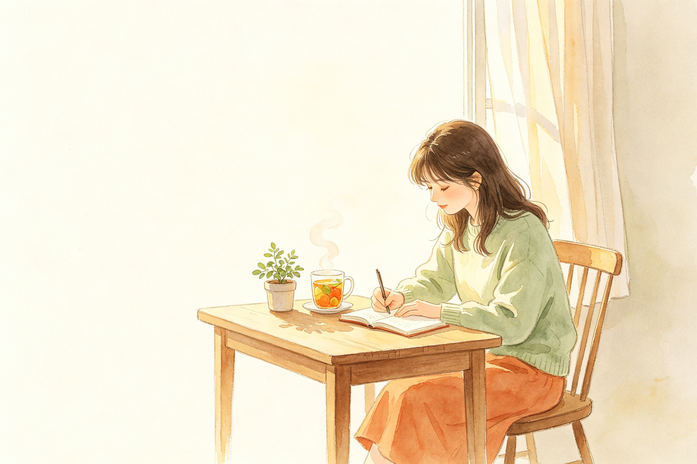

暴食 / 贪食专用 · 温柔记录每一次冲动

外部诱因 · 客观记录，不评价好坏
工作、沟通、压力、独处、刷短视频、疲惫、熬夜……都可以，如实写。
可多选 · 不必精确，接近就好
躯体信号 · 试着区分「饥饿」和「冲动」
最重要的一栏 · 写下第一个念头，不用评判对错
冲动来临时，脑子里第一跳出来的那句话是什么？
看见模式，才能慢慢改变它
③ 如果重来一次，可以做什么替代？
所有记录只保存在本机浏览器，不会上传。
删除浏览器数据会同时清空记录。
你刚才停下来看见了自己，这本身就很难得。
近 7 天 · 生成中…
复盘这一周：冲动来临时哪一步最容易卡住？这周有没有新的发现，想对自己说什么？